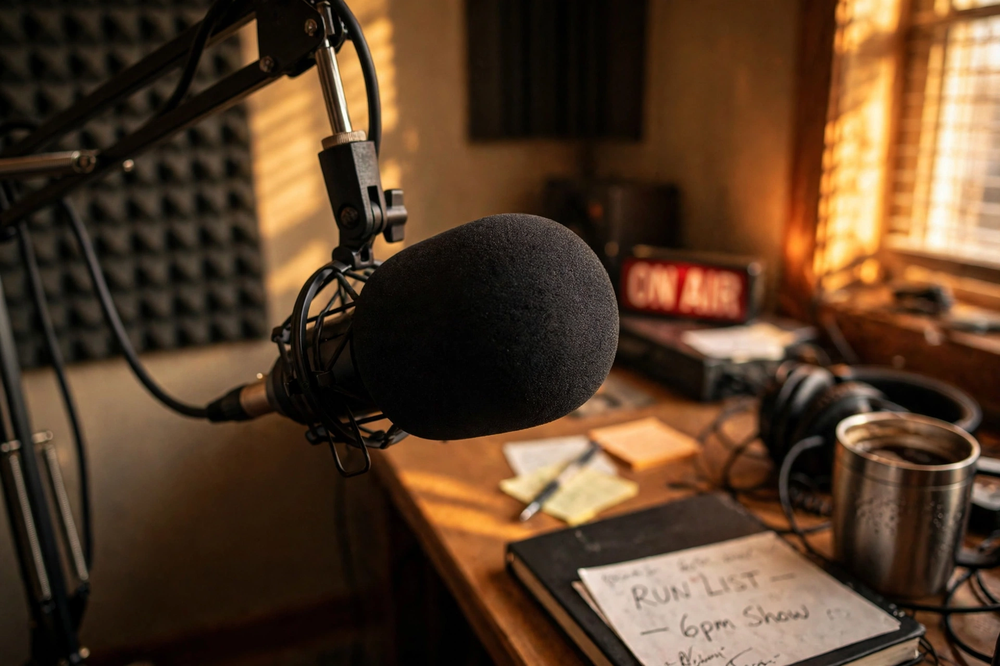

Top stories
News, analysis and culture from NPR and its member stations

NPR's homepage mixes its newsroom's top stories with the network's cultural identity — music, books, film and podcasts — with hourly newscast audio and local member-station stories woven in.
News
The day's reporting from NPR correspondents worldwide
Top-of-the-hour stories and in-depth pieces from Morning Edition and All Things Considered.
World
International reporting from NPR's bureaus
NPR maintains bureaus from London to Shanghai; its foreign coverage is a signature.
Politics
Washington coverage and the NPR Politics Podcast
Politics reporting with a data and demographics bent.
Culture
Books, film, music and the Tiny Desk
The culture desks and the famous Tiny Desk Concerts.
Latest & most read
- NPR News Now: the five-minute hourly podcast
- Tiny Desk Concerts: the latest performance
- Planet Money: the economy, explained
About
Background on this news organisation: Wikipedia article.